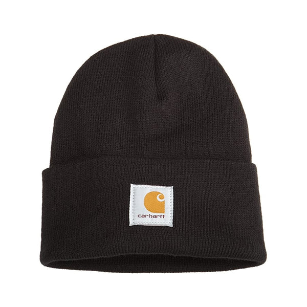
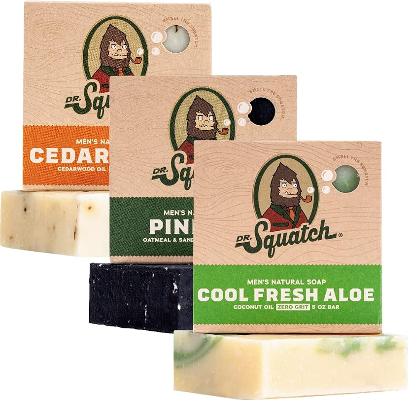
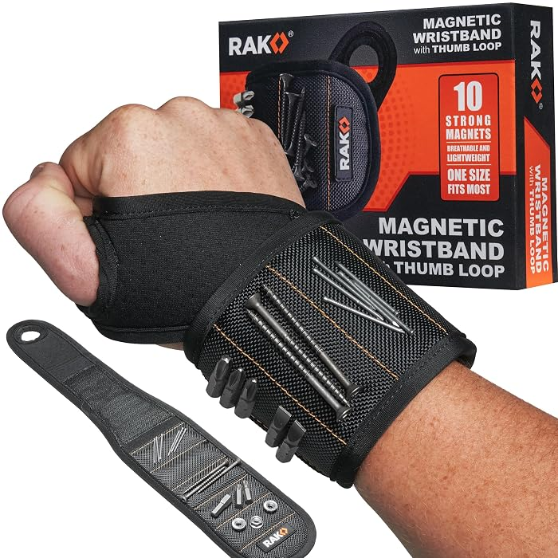
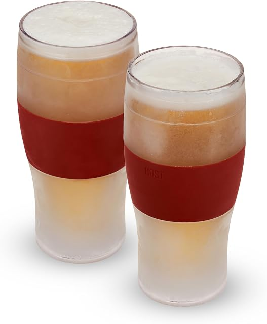
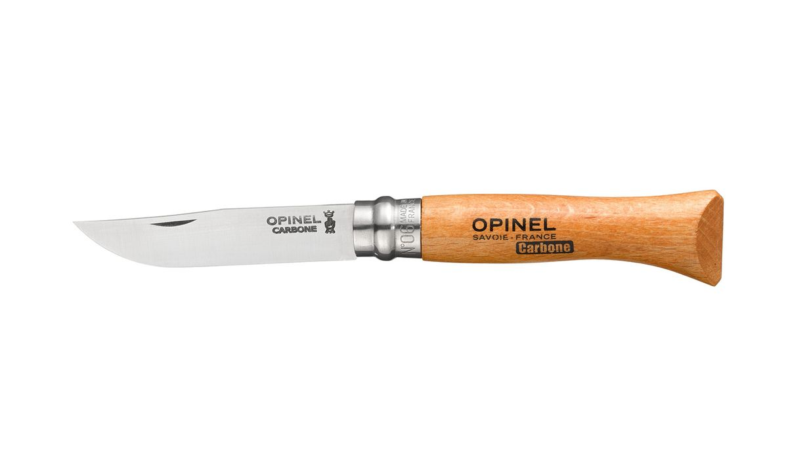
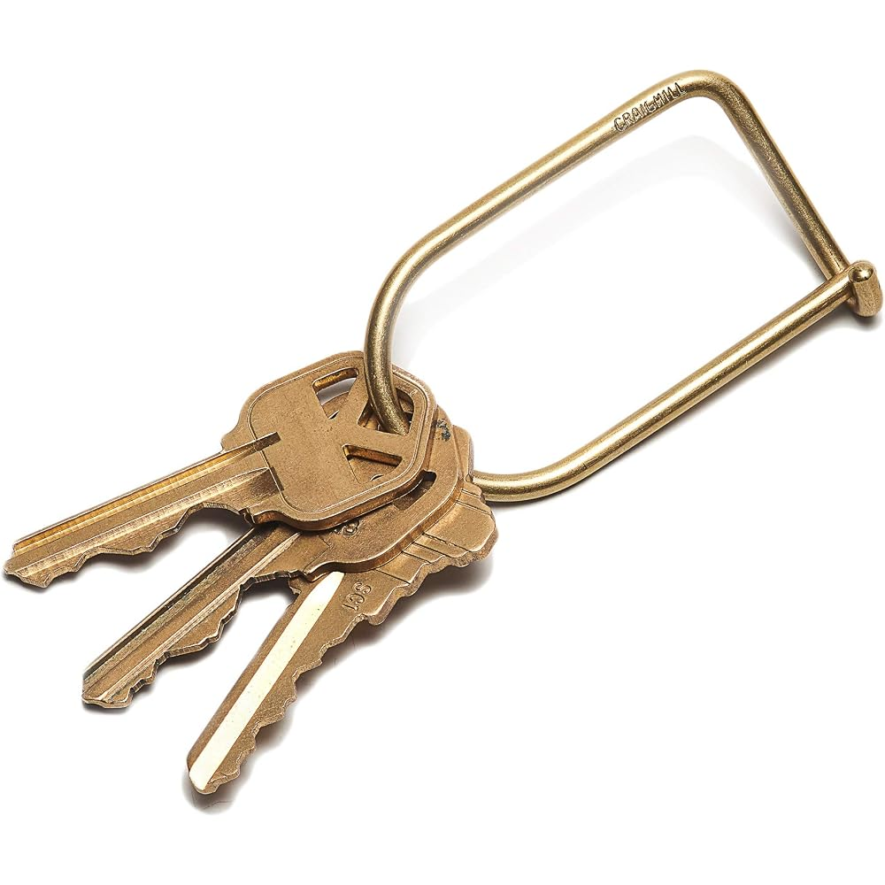
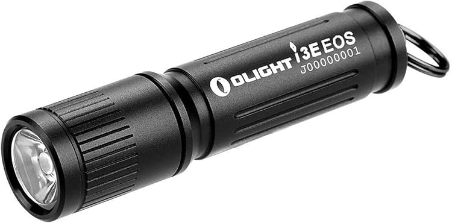
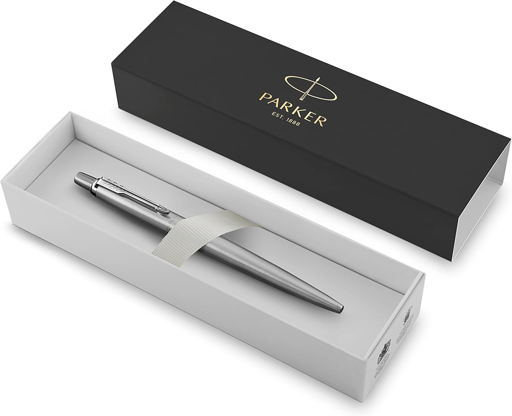
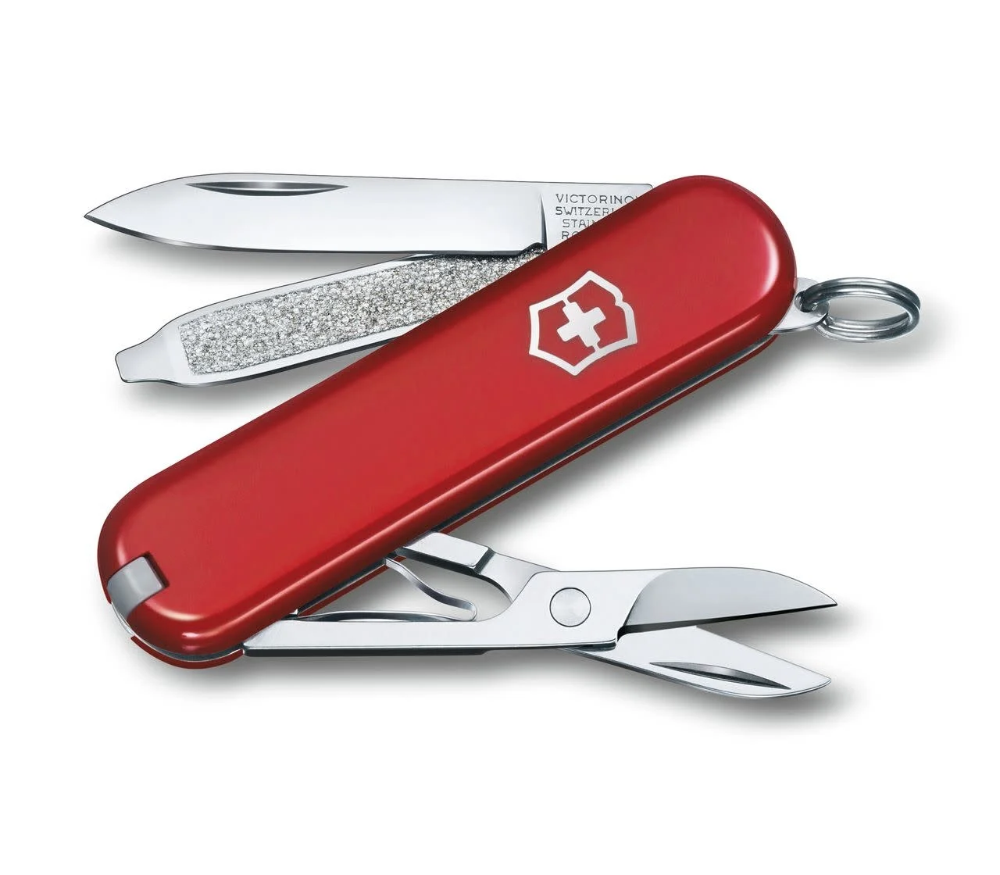

The 10 Best Gifts Under $25 for Men (2026 Holiday Gift Guide)
Buying a gift for a man is a special kind of impossible. Ask him what he wants and he'll say "nothing." Buy him something random and it lives in a drawer until the next move. The trick isn't spending more — it's buying something he'd actually pick for himself but would never bother ordering.
This guide is built on that rule. Every gift below is under $25, from a brand he'd recognize, and — most importantly — it's the kind of thing that gets used weekly. These are the gifts that earn a text in January saying "okay, this is actually great."
How we picked these
- Under $25, really. No "was $60, now $24.99 for the next 40 minutes" games. If a gift can't stay near $25, it didn't make the list.
- Recognizable brands or proven bestsellers. No-name gadgets with 14 reviews and suspiciously perfect English didn't qualify.
- Weekly-use potential. A gift has to earn its drawer space. If it solves a real problem or upgrades something he touches daily, it's in.
We did not accept payment for placement, and we re-check prices before the holiday season each year.

1. Carhartt Knit Cuffed Beanie — the can't-miss hero gift
The most-gifted winter hat in America for a reason: one-size cuffed beanie with the iconic Carhartt patch, 20+ colors, and over 170,000 ratings at 4.8 stars. It's the rare gift that works for a dad, a brother, a coworker, or a college kid.
- Pros: instantly recognizable brand; warm, classic cuffed fit; huge color range; a price that sits comfortably under $25.
- Cons: it's acrylic, not wool — fine for most winters, not for extreme cold.
Best for: the safe pick when you have no idea what to buy.
Check current price
2. Dr. Squatch Natural Bar Soap 3-Pack — the upgrade he won't buy himself
Ninety-eight percent natural, cold-processed bar soap in man-friendly scents, with 85,000+ reviews behind the brand. It comes gift-ready and turns a daily chore into something he actually looks forward to — which is exactly what a good gift does.
- Pros: cult brand with a huge review base; premium packaging — no wrapping skills required; three scents means he'll find a favorite.
- Cons: a soap snob will have opinions about the scents; bars are chunky, not travel-sized.
Best for: the guy still using whatever soap was on sale.
Check current price
3. Alpha Grillers Instant-Read Meat Thermometer — the end of dry chicken
The #1 bestseller in meat thermometers: 2-second reads, backlit display, IP67 waterproof, and a 4.8-star rating. The difference between juicy and dry is about 10 degrees, and no amount of poking the meat with a fork tells you which side you're on.
- Pros: fast, accurate, and genuinely waterproof; backlit screen for night grilling; under $10 most of the year.
- Cons: you'll wonder how you cooked without one, which is not really a con.
Best for: grillers, roast-chicken makers, and chronic overcookers.
Check current price
4. RAK Magnetic Wristband — the "third hand" for DIY guys
Ten strong magnets sewn into ballistic nylon hold screws, nails, and drill bits right on your wrist while you work. It comes in a gift box, has 21,000+ reviews at 4.7 stars, and it's the #1 tool belt on Amazon. Anyone who's ever held a screw in his teeth gets it instantly.
- Pros: genuinely useful for anyone who does home projects; one-size fit; gift-boxed and ready to give.
- Cons: not much use if he never touches a tool — know your recipient.
Best for: the DIYer, the new homeowner, the dad with a project list.
Check current price
5. HOST Beer FREEZE Glasses (Set of 2) — frosty beer without the freezer burn
Double-walled glasses with active cooling gel: stash them in the freezer, pour, and the beer stays cold for around two hours. The crimson-red set of two is the #1 beer glass on Amazon, BPA-free, and it looks sharp enough to hand over unwrapped.
- Pros: solves a real problem (warm beer); insulated silicone grip; looks like a much more expensive gift.
- Cons: needs freezer space and a little planning; hand-wash recommended.
Best for: the beer drinker who has everything else.
Check current price
6. Opinel No. 8 Carbon Folding Knife — 135 years of French heritage
The classic everyday-carry knife: carbon steel blade, beechwood handle, the twist-lock ring that's been around since 1890. Over a thousand bought in the past month alone. It opens boxes, cuts rope, slices apples, and looks like it belongs in a museum while doing it.
- Pros: legendary brand and craftsmanship; carbon steel takes a razor edge; featherweight in a pocket.
- Cons: carbon steel needs an occasional wipe of oil or it patinas — tell him, he'll think it's cool.
Best for: the outdoorsy guy, the EDC enthusiast, the design nerd.
Check current price
7. Craighill Wilson Keyring — the design-object keychain
A single bent piece of solid brass that replaces the jangly split ring. Brooklyn-made by a design studio with museum-store credibility, it looks like a tiny sculpture on his keys. Minimalist, gift-ready, and the kind of thing he'd never buy for himself at this price.
- Pros: genuine design object, not a gadget; develops a beautiful patina; instantly elevates a pocket full of keys.
- Cons: it's a premium price for a keyring — the design is the whole point.
Best for: the guy with good taste who says he wants nothing.
Check current price
8. Olight i3E EOS Keychain Flashlight — the stocking-stuffer legend
Ninety lumens from a flashlight smaller than your thumb, running on a single AAA. IPX8 waterproof, weighs less than an ounce, and Olight's own site shows a 4.9-star rating across 5,000+ reviews. It lives on his keychain and gets used constantly — finding keyholes, fuse boxes, dropped things.
- Pros: absurdly bright for its size; single twist operation — no modes to learn; under $15.
- Cons: one brightness level (it's a keychain light, not a spotlight).
Best for: stockings, glove boxes, and anyone who's always losing things in the dark.
Check current price
9. Parker Jotter Ballpoint Pen — the "nice pen" archetype
Seventy years of icon status: stainless steel with chrome trim, the signature click, and it arrives in a Parker gift box. With 14,000+ ratings at 4.5 stars, it's the pen people buy when a plastic pen won't do — signings, graduations, first jobs, and "I got you something small but real."
- Pros: timeless design that never looks cheap; gift box included; refills available forever.
- Cons: medium point isn't for everyone — check if he's a fine-point person.
Best for: coworkers, grads, and the "small but real" gift slot.
Check current price
10. Victorinox Classic SD Swiss Army Knife — the most iconic sub-$25 gift in existence
Seven tools — blade, scissors, nail file, screwdriver, tweezers, toothpick, key ring — in a 58mm red handle from a 140-year-old brand with a lifetime warranty. It pairs naturally with the Opinel above (keychain knife vs. full-size knife) without duplicating it, and it's been the default "I need a good small gift" answer for decades.
- Pros: legendary quality and warranty; genuinely useful tools, no filler; the red scales are instantly recognizable.
- Cons: small tools mean small hands work best; don't put it in carry-on luggage.
Best for: everyone. This is the stocking stuffer that never misses.
Check current priceQuick comparison
| Gift | Best for | Why it wins |
|---|---|---|
| Carhartt Beanie | The safe pick | Iconic, winter-timed, 170K+ ratings |
| Dr. Squatch 3-Pack | Daily-upgrade guys | Cult brand, gift-ready box |
| Alpha Grillers Thermometer | Grillers | #1 bestseller, under $10 |
| RAK Wristband | DIYers | The "third hand" tool |
| HOST Beer FREEZE Glasses | Beer drinkers | Two-hour frosty pours |
| Opinel No. 8 | Outdoorsy / EDC | 135 years of heritage |
| Craighill Keyring | Design lovers | Solid brass sculpture |
| Olight i3E EOS | Stockings | 90 lumens, keychain size |
| Parker Jotter | Coworkers / grads | 70-year icon, gift box |
| Victorinox Classic SD | Everyone | The default great small gift |
Frequently asked questions
What is the best gift under $25 for a man who has everything?
Go practical and upgrade-grade: the Opinel No. 8, the RAK magnetic wristband, or the Victorinox Classic SD. Men who "have everything" usually have everything except the nice version of the thing — a heritage knife or a tool that makes projects easier beats another novelty every time.
Are cheap gifts under $25 actually good?
Some are, most aren't. The difference is brand credibility and review depth: the Carhartt beanie has 170,000+ ratings, Dr. Squatch has 85,000+. A no-name $25 item with 14 reviews is a gamble; an established brand's $25 item with six figures of reviews is a proven product. Everything on this list is the second kind.
What are good stocking stuffers for men?
The Olight i3E EOS flashlight, the Victorinox Classic SD, the Dr. Squatch 3-pack, and the Alpha Grillers thermometer all fit in a stocking and cost well under $25. Small, useful, no learning curve — the holy trinity of stocking stuffers.
What's a good $25 gift for a coworker?
The Parker Jotter in its gift box is the professional choice — appropriate, useful, and it looks like you spent more. The Carhartt beanie works too if the office runs casual. Avoid the knives for office gift exchanges; know your HR culture.
What gift under $25 works for a teenager?
The Carhartt beanie (streetwear-adjacent and everywhere), the Olight keychain light, or the Dr. Squatch 3-pack. All three are brands teens actually recognize, which matters more than anything else at that age.
Do I need to spend more than $25 for a good men's gift?
No — and this list is the proof. The best gifts aren't the most expensive ones; they're the ones matched to something he already does. A $10 thermometer for the griller beats a $50 gadget he'll never touch. Match the gift to the habit, not the budget.
The bottom line
The best gift under $25 for a man isn't the cleverest one — it's the one that gets used. Match the pick to something he already does every week (grills, fixes things, drinks beer, loses things in the dark) and you'll give the rare gift that earns its place. Buying for someone who cooks instead? Our kitchen gadgets under $25 guide has ten more proven picks.
Prices on Amazon change frequently. We re-check this guide before each holiday season, but always confirm the current price on the product page before you buy. As an Amazon Associate, we earn from qualifying purchases made through the links above.